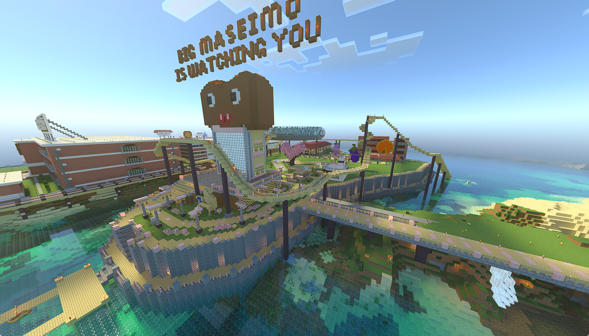
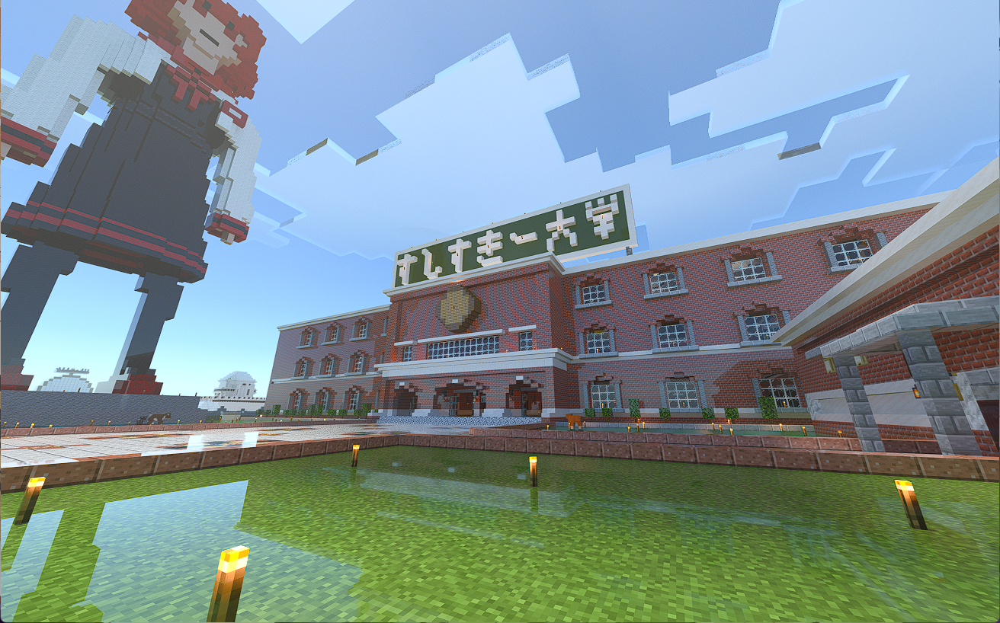

<!DOCTYPE html>
<html lang="ja">

<head>
  <meta charset="UTF-8">
  <title>非公式すしすきーマイクラサーバ マップ</title>
  <link rel="stylesheet" href="https://unpkg.com/leaflet/dist/leaflet.css" />
  <style>
    #map {
      height: 100vh;
    }
  </style>
</head>

<body>

  <div id="map"></div>

  <script src="https://unpkg.com/leaflet/dist/leaflet.js"></script>
  <script>
    // マップを初期化
    var map = L.map('map', {
      crs: L.CRS.Simple,  // 独自画像用
      minZoom: -1
    });

    // マップの画像（事前に用意したスクショ画像）
    // 2枚のマップ画像を並べる
    var image1 = L.imageOverlay('mapData/0_0.png', [[0, 0], [500, 500]]).addTo(map);
    var image2 = L.imageOverlay('mapData/0_1.png', [[0, 500], [500, 500 * 2]]).addTo(map);
    var image3 = L.imageOverlay('mapData/-1_0.png', [[-500, 0], [0, 500]]).addTo(map);
    var image4 = L.imageOverlay('mapData/-1_1.png', [[-500, 500], [0, 500 * 2]]).addTo(map);
    var image5 = L.imageOverlay('mapData/1_0.png', [[500, 0], [500 * 2, 500]]).addTo(map);
    var image6 = L.imageOverlay('mapData/1_1.png', [[500, 500], [500 * 2, 500 * 2]]).addTo(map);
    var image7 = L.imageOverlay('mapData/0_-1.png', [[0, -500], [500, 0]]).addTo(map);
    var image8 = L.imageOverlay('mapData/-1_-2.png', [[-500, -500 * 2], [0, -500]]).addTo(map);
    var image9 = L.imageOverlay('mapData/1_-2.png', [[500, -500 * 2], [500 * 2, -500]]).addTo(map);
    var image10 = L.imageOverlay('mapData/1_-1.png', [[500, -500], [500 * 2, 0]]).addTo(map);
    var image11 = L.imageOverlay('mapData/0_-2.png', [[0, -500 * 2], [500, -500]]).addTo(map);
    var image8 = L.imageOverlay('mapData/-1_-1.png', [[-500, -500], [0, 0]]).addTo(map);

    // マップの表示範囲
    var bounds = [[-500, -500 * 2], [500, 500 * 2]]; // 全体をカバーするサイズ
    map.fitBounds(bounds);

    // 地点マーカーを置く
    var marker = L.marker([100, 500]).addTo(map)
      .bindPopup('<h2>マセイモ島</h2><p>座標: 1220 72 900<br>居住者: 塩ポテト君</p>');
    var marker2 = L.marker([300, 780]).addTo(map)
      .bindPopup('<h2>すしすきー大学</h2><p>座標: 1360 69 750<br>制作者: 塩ポテト君</p>');

    // 線路を引く
    var polyline = L.polyline([
      [170, 473],
      [190, 473],
      [190, 640],
      [530, 640]
    ], { color: '#ff8888' }).addTo(map);
    polyline.bindTooltip('ポテト線', {
      permanent: true,     // 常に表示する
      direction: 'center', // 線の中心に表示
      className: 'railway-label' // CSSでデザインもできるよ
    }).openTooltip();
    var polyline2 = L.polyline([
      [170, 473],
      [200, 473],
      [200, 155],
      [260, 155],
      [260, 150]
    ], { color: '#ff8888' }).addTo(map);
    polyline2.bindTooltip('ポテト線', {
      permanent: true,     // 常に表示する
      direction: 'center', // 線の中心に表示
      className: 'railway-label' // CSSでデザインもできるよ
    }).openTooltip();

    var polyline3 = L.polyline([
      [105, 100],
      [105, -550],
      [80, -550]
    ], { color: '#ff0000' }).addTo(map);
    polyline3.bindTooltip('コロッセオ線', {
      permanent: true,     // 常に表示する
      direction: 'center', // 線の中心に表示
      className: 'railway-label' // CSSでデザインもできるよ
    }).openTooltip();

    var polyline4 = L.polyline([
      [105, 100],
      [105, 150],
      [650, 150],
      [650, 50],
      [675, 50]
    ], { color: '#ffffff' }).addTo(map);
    polyline4.bindTooltip('メトロぺす線', {
      permanent: true,     // 常に表示する
      direction: 'center', // 線の中心に表示
      className: 'railway-label' // CSSでデザインもできるよ
    }).openTooltip();

    var polyline5 = L.polyline([
      [675, 50],
      [675, 20],
      [1000, 20]
    ], { color: '#8844ff' }).addTo(map);
    polyline5.bindTooltip('北線', {
      permanent: true,     // 常に表示する
      direction: 'center', // 線の中心に表示
      className: 'railway-label' // CSSでデザインもできるよ
    }).openTooltip();

    var polyline6 = L.polyline([
      [675, 50],
      [675, 450],
      [530, 450],
      [530, 1000]
    ], { color: '#ffff00' }).addTo(map);
    polyline6.bindTooltip('デンチョス線', {
      permanent: true,     // 常に表示する
      direction: 'center', // 線の中心に表示
      className: 'railway-label' // CSSでデザインもできるよ
    }).openTooltip();

    var polyline7 = L.polyline([
      [750, 10],
      [750, -1000]
    ], { color: '#00ffff' }).addTo(map);
    polyline7.bindTooltip('初期スポーン接続', {
      permanent: true,     // 常に表示する
      direction: 'center', // 線の中心に表示
      className: 'railway-label' // CSSでデザインもできるよ
    }).openTooltip();

    var point1 = [170, 473];
    var myIcon1 = L.divIcon({ className: 'icon1', iconAnchor: [13, 13] });
    L.marker(point1 , {icon: myIcon1}).addTo(map)
    L.tooltip({
      permanent: true,
      direction: 'right', // 右側に表示
      className: 'station-label',
      offset: [10, 0]
    })
      .setContent('マセイモ駅')
      .setLatLng(point1)
      .addTo(map);

    var point2 = [80, -550];
    var myIcon2 = L.divIcon({ className: 'icon2', iconAnchor: [13, 13] });
    L.marker(point2 , {icon: myIcon2}).addTo(map)
    L.tooltip({
      permanent: true,
      direction: 'right', // 右側に表示
      className: 'station-label',
      offset: [10, 0]
    })
      .setContent('コロッセオ駅')
      .setLatLng(point2)
      .addTo(map);

    var point3 = [105, 100];
    var myIcon3 = L.divIcon({ className: 'icon3', iconAnchor: [13, 13] });
    L.marker(point3 , {icon: myIcon3}).addTo(map)
    L.tooltip({
      permanent: true,
      direction: 'right', // 右側に表示
      className: 'station-label',
      offset: [10, 0]
    })
      .setContent('ぺす像前駅')
      .setLatLng(point3)
      .addTo(map);

      var point3_2 = [260, 150];
      L.marker(point3_2 , {icon: myIcon3}).addTo(map)
    L.tooltip({
      permanent: true,
      direction: 'right', // 右側に表示
      className: 'station-label',
      offset: [10, 0]
    })
      .setContent('ぺす公園駅')
      .setLatLng(point3_2)
      .addTo(map);

      var point4 = [675, 50];
      var myIcon4 = L.divIcon({ className: 'icon4', iconAnchor: [13, 13] });
    L.marker(point4 , {icon: myIcon4}).addTo(map)
    L.tooltip({
      permanent: true,
      direction: 'right', // 右側に表示
      className: 'station-label',
      offset: [10, 0]
    })
      .setContent('中央駅')
      .setLatLng(point4)
      .addTo(map);

      var point5 = [675, 290];
      var myIcon5 = L.divIcon({ className: 'icon5', iconAnchor: [13, 13] });
    L.marker(point5 , {icon: myIcon5}).addTo(map)
    L.tooltip({
      permanent: true,
      direction: 'right', // 右側に表示
      className: 'station-label',
      offset: [10, 0]
    })
      .setContent('デンチョス駅')
      .setLatLng(point5)
      .addTo(map);

      var point5_2 = [530, 640];
      L.marker(point5_2 , {icon: myIcon5}).addTo(map)
    L.tooltip({
      permanent: true,
      direction: 'right', // 右側に表示
      className: 'station-label',
      offset: [10, 0]
    })
      .setContent('デンチョス-ポテト線切り替え')
      .setLatLng(point5_2)
      .addTo(map);

  </script>
  <style>
    .icon1 {
      width: 20px !important;
      height: 20px !important;
      border-radius: 10px;
      border: 3px solid #fdfdfd;
      box-shadow: 1px 1px 4px rgba(0, 0, 0, 0.8);
      background-color: rgb(255, 150, 157);
    }
    .icon2 {
      width: 20px !important;
      height: 20px !important;
      border-radius: 10px;
      border: 3px solid #fdfdfd;
      box-shadow: 1px 1px 4px rgba(0, 0, 0, 0.8);
      background-color: rgb(255, 0, 0);
    }
    .icon3 {
      width: 20px !important;
      height: 20px !important;
      border-radius: 10px;
      border: 3px solid #fdfdfd;
      box-shadow: 1px 1px 4px rgba(0, 0, 0, 0.8);
      background-color: rgb(255, 255, 255);
    }
    .icon4 {
      width: 20px !important;
      height: 20px !important;
      border-radius: 10px;
      border: 3px solid #fdfdfd;
      box-shadow: 1px 1px 4px rgba(0, 0, 0, 0.8);
      background-color: rgb(0, 255, 255);
    }
    .icon5 {
      width: 20px !important;
      height: 20px !important;
      border-radius: 10px;
      border: 3px solid #fdfdfd;
      box-shadow: 1px 1px 4px rgba(0, 0, 0, 0.8);
      background-color: rgb(255, 255, 0);
    }
  </style>

</body>

</html>